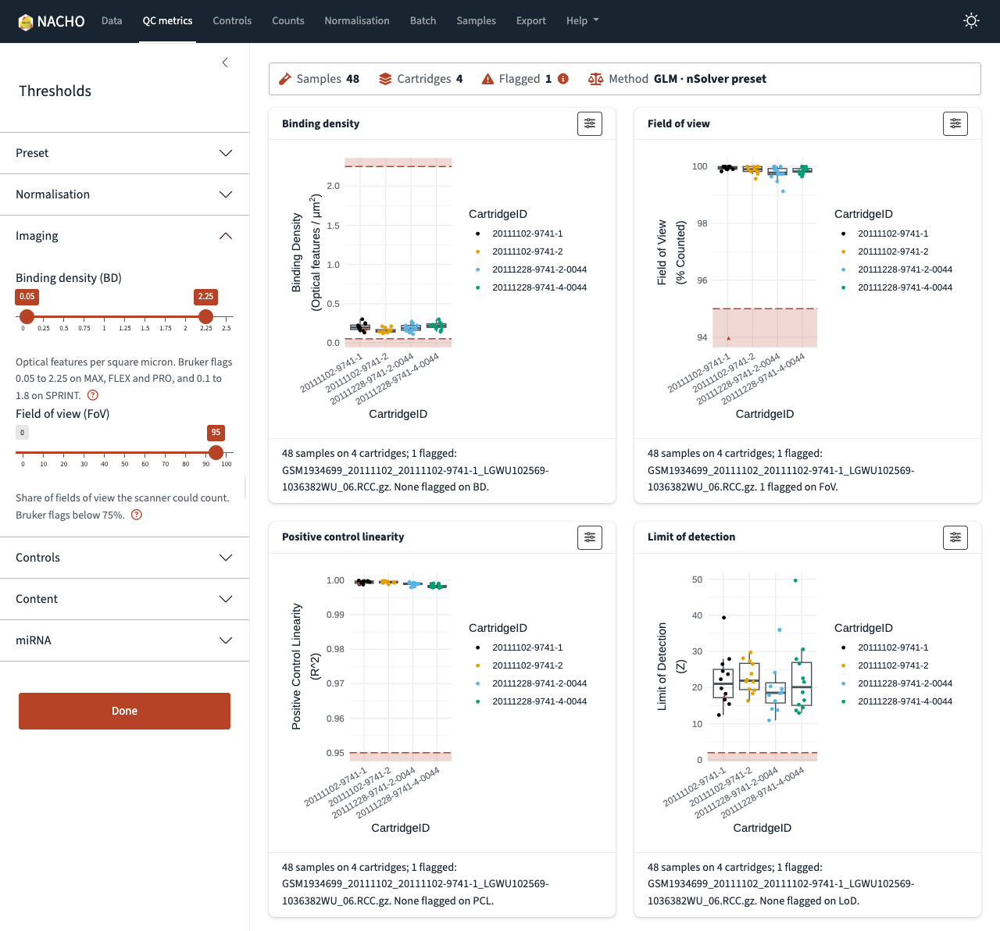
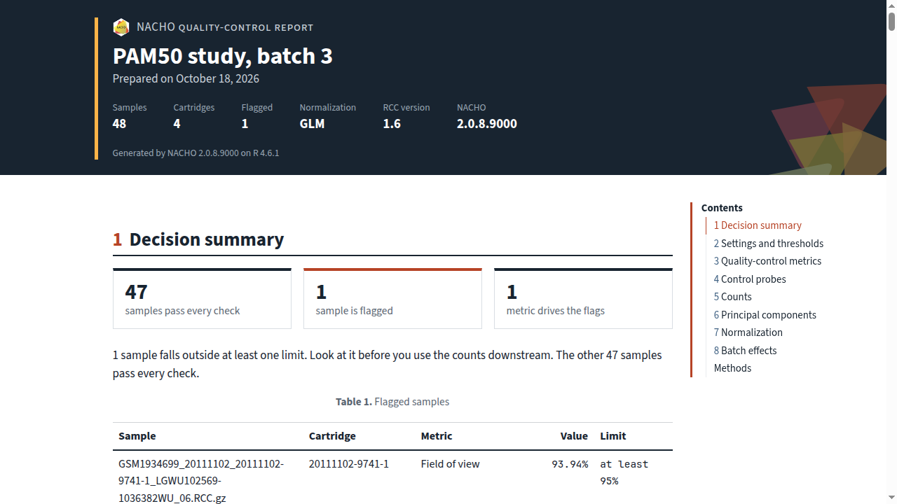
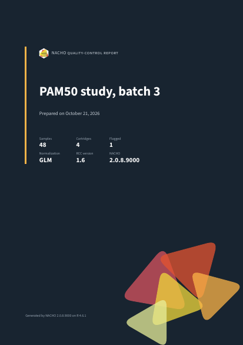
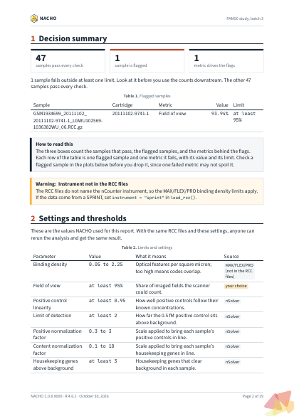
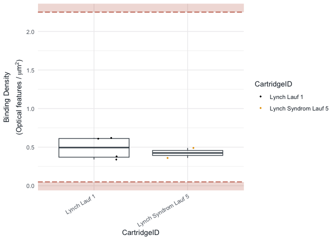

Step 1
Step 2
Step 3

The quality-control metrics page of the NACHO app, with a box plot for each metric and the limits drawn as dashed lines.
Shiny app
See every sample, change every limit
- The summary strip counts the flagged samples while you move a limit.
- Select a sample once, and every plot outlines it.
- Separate pages show the control probes, the normalisation and the batch effects.
- The Export page writes the report from the app.
visualise(nacho)
The top of the HTML report, with the study header and the decision summary for one flagged sample.

The cover page of the PDF report.

A page of the PDF report, with the running header, the decision summary and the page footer.
Quarto report
A quality-control record you can hand over
- The same
nachoobject gives an HTML report or a PDF report. - The decision summary comes first: which samples fail, and why.
- Figures have numbers and captions, and tables are accessible.
- A methods section records the settings and the software versions.
render(nacho, format = "typst")
Box plot of the binding density of each cartridge, with the limits of the quality control drawn as dashed lines.
Analysis
Part of your R workflow
-
autoplot()draws each quality-control figure as aggplot2plot. -
normalise()andexclude_outliers()run again with new settings. -
as_summarized_experiment()gives the counts to Bioconductor.
Installation
Install the release from CRAN:
install.packages("NACHO")If you want the development version without an extra package, install it from R-universe:
install.packages(
"NACHO",
repos = c("https://mcanouil.r-universe.dev", "https://cloud.r-project.org")
)If you want the latest commit, install it from GitHub with pak:
# install.packages("pak")
pak::pak("mcanouil/NACHO")Cite and get help
If you use NACHO in your work, cite the article in Bioinformatics. To report a bug, open an issue on GitHub with a minimal reproducible example. This project has a Contributor Code of Conduct.